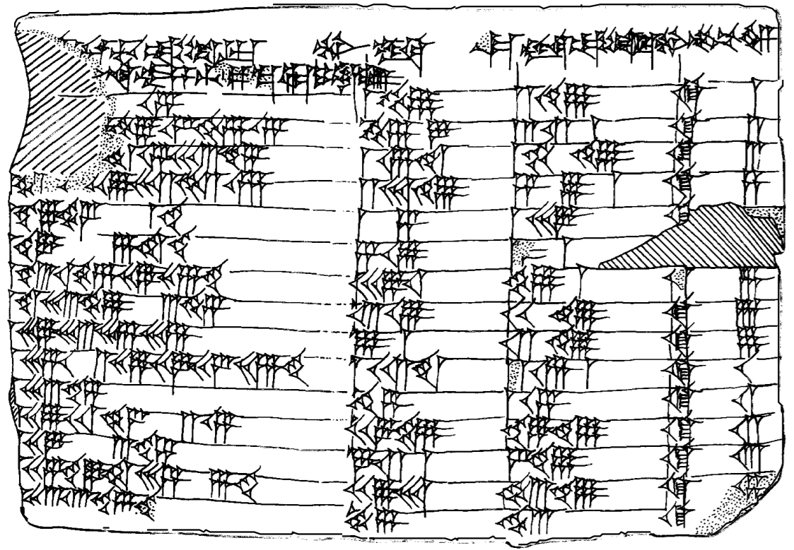

Euclid, Euclid, Euclid!
Here you can see some of the projects I've been working on.
Three projects I'd like to highlight here are my pythagorean triple generator (the algorithm lists every pythagorean triple up to scaling and reflections), an efficient means of calculating gcd's, and an emulator for string algorithms, with a gcd algorithm as an example.
Calculating the greatest common divisor
How do you calculate the gcd of two integers? There are obviously ways you could brute force it, but what if we want to be faster?
Explain Euclid's algorithm and how it works
Show code and provide demo here
Listing The Pythagorean Triples
Human's have been listing the pythagorean triples since at least 1800 BC when the Babylonain clay tablet known as Plimpton 322 tablet was made.
So, how does one identify the pythagorean triples?
You could brute force it...
But Euclid's algorithm is useful.
How do we get them all... (describe my algorithm)
Informationclude code and demo here
String algorithm
This was done out of a goofy impulse. The Art of Programming mentions that most algorithms can be implemented as such, including Euclid's algorithm for computing gcd's, so I wanted to create an emulator.
I initially used char arrays, but was bothered my all the memmoves I was performing. It was quite slow
Also didn't want to needlessly sift through the arrays of a linked list, so I made my own data type
Note, I should really create simple implementations of these other two ways just to demo speed comparisons
Talk about my invariants, and my implementation more generally
Talk about my regrets for implementing it in c (namely having to make linked lists), but also why it was enjoyable.
Talk about the code for checking that the invariants have been preserved for debugging
gdb fun
Talk about learning that you can define your own functions in gdb, and why I did this